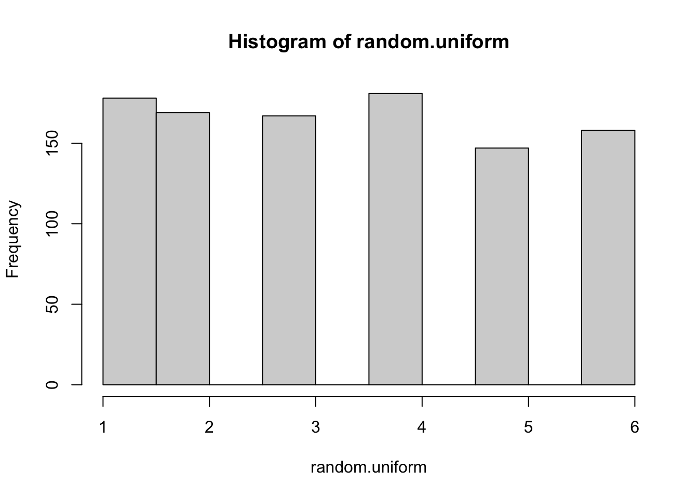
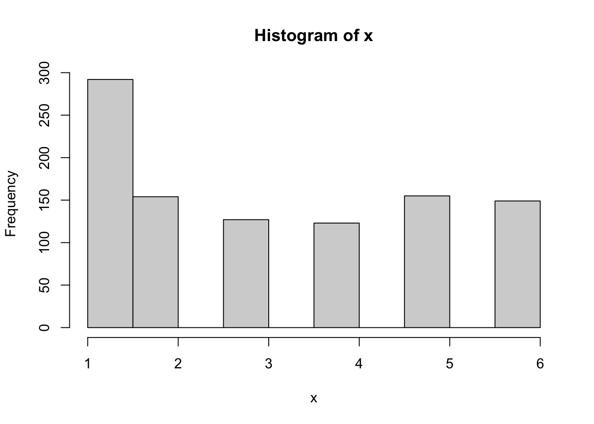
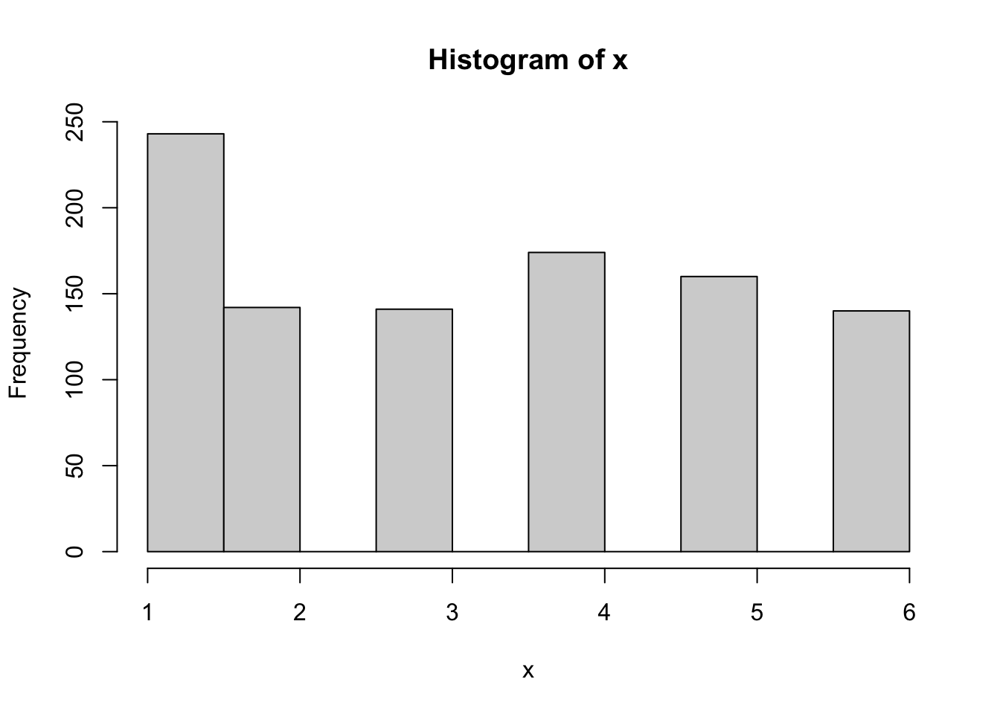
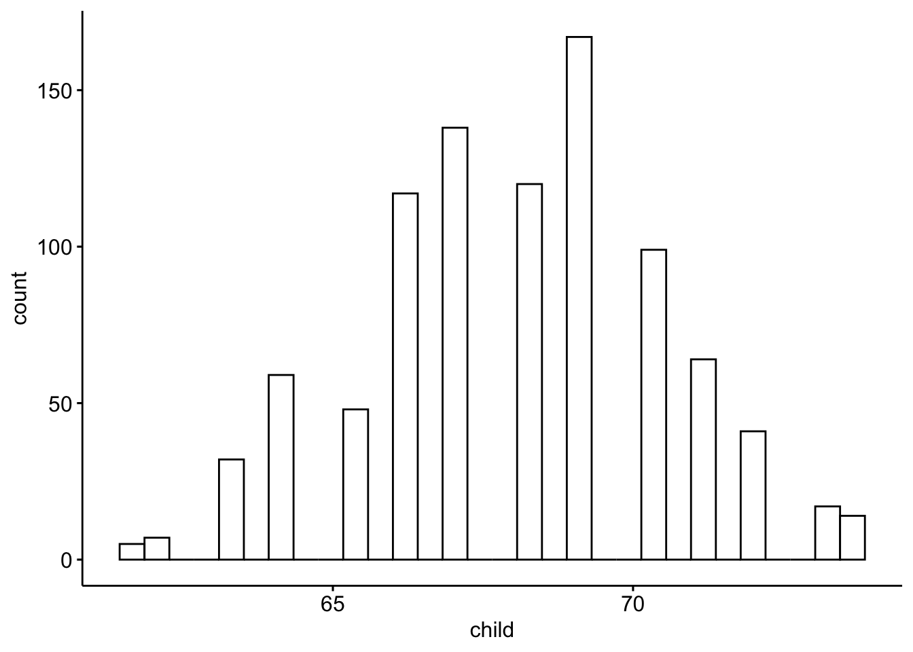
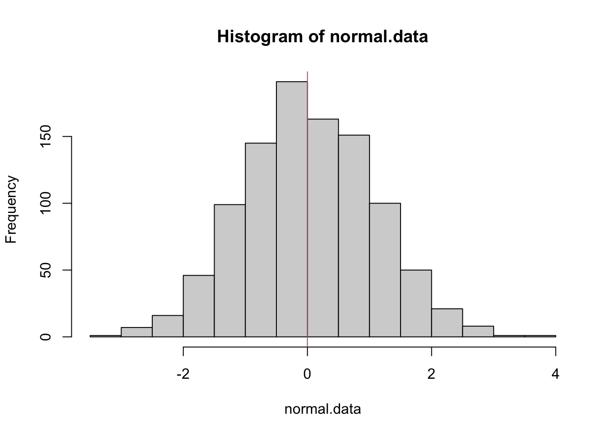
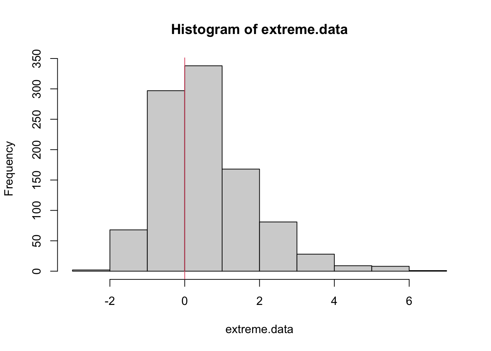
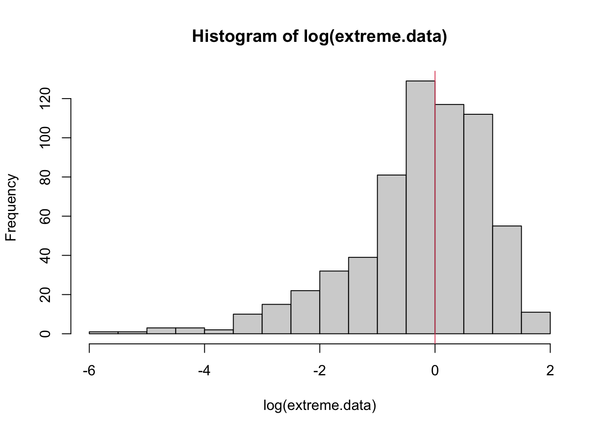
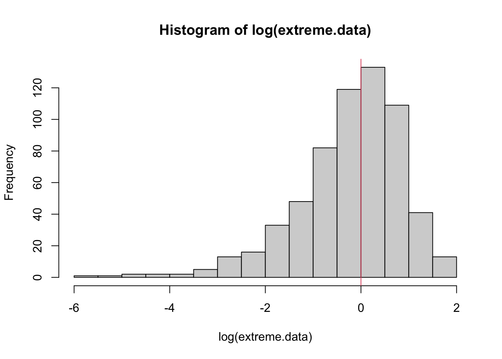

Chapter 52 BLAST Alignment score distribution
By: Nathan Brouwer
library(compbio4all)52.1 Packages
#install.packages("HistData")
library(HistData)
library(ggpubr)##
## Attaching package: 'ggpubr'## The following object is masked from 'package:ape':
##
## rotate## The following objects are masked from 'package:flextable':
##
## border, font, rotate## The following object is masked from 'package:cowplot':
##
## get_legend#install.packages("evd")
library(evd)##
## Attaching package: 'evd'## The following object is masked from 'package:igraph':
##
## clusters52.2 Distributions of alignment scores
Imagine we could keep track of all of the steps of a BLAST search. At a certain point, BLAST will have made many local alignments of a few dozen to a couple hundred bases between the query sequence you submitted and sequences in the database. Each of these local, pairwise alignments met all the criteria for being worthy of consideration and so are recored as hits. Now we want to judge objectively how good these hits are and which ones are most worthy of further consideration. We can do this by working of an E-value.
With our collection of hits, we could take their scores and plot them. Many things in biology when plotted will take on a bell-curve or normal distribution. Scores for alignments, however, take on an extreme value distribution (EVD). That is, compared to a symmetric normal distribution an EVD has too few low numbers (lower alignment scores) and extra high scores.
Now imagine that instead of BLASTing our sequence against a database of real sequence, we made up a bunch of random sequences. We could invent a random sequene by writing all the letters representing amino acids, tossing them into a hat, and pulling out an letter and writiing it down. We would then toss the letter back in, mix up the letters, and pull out another one. Repeat this 100 times and we’d have a perfectly random sequence the would be about the length of a protein, but wouldn’t code for anything (or be very very very very very unlikely to code for anything). If we invent, say 1000 sequence we could make a database of random sequences and would could aline our focal query sequence against our made up database. When could then score the local alignment between the query and each random sequence. Because these sequences are made up, the alignments will be pretty bad and teh scores low. However, occassionally there might be a fairly high score due to chance. So, just due to luck we could accidently invent a sequence that is a pretty good alignment with our query sequence. The question the E-values are trying to get at is how often this could happen, and how much better are our the scoures of our BLAST hits than the scores we’d get from BLASTing again random sequences.
The following code will illustrate these concepts.
52.3 Simulating data
The easiest way to think about simulating data is to roll a dice. Six-sided die allows you to draw numbers from a uniform distribution. With a uniform distribution, all values have the same likelihood of occuring. On a die, you have a 1/6 change of getting a 1, a 1/6 change of a 2, etc.
We can simulate a 6-sided die in R using the runif() function, which doesn’t mean “run-if” but rather “r-unif”, for random-uniform.
We can simulate rolling a die once with this code. n is the number of rolls. Min is the minimum possible value, max is the max possible value. Note that the min is set to 0.5 and the max to 6. This will be explained in a second.
So, this code generates a number between 0.5 and 6.5
runif(n = 1, min = 0.5, max = 6.5)## [1] 0.6373515This code generates 10 numbers from 0.5 to 6.5.
runif(n = 10, min = 0.5, max = 6.5)## [1] 3.7511400 1.7307466 5.5746196 1.0392788 4.7087066 3.1486117 1.7012598
## [8] 3.4826180 5.3432796 0.6913131runif() allows for non-integers, so we can make this like a real dice using round()
round(runif(n = 1, min = 0.50000000, max = 6.50000000))## [1] 1If we want to simulate what would happen if 50 people in class all rolled a dice we set n to 50
round(runif(n = 50, min = 0.5, max = 6.5))## [1] 5 3 3 2 6 3 4 1 5 3 6 2 3 4 3 4 1 6 1 4 5 4 2 4 2 3 2 6 5 6 5 5 6 3 4 1 1 2
## [39] 1 5 1 1 3 3 3 4 6 3 4 1If we had 10000 people in our class:
round(runif(n = 10000, min = 0.5, max = 6.5))## [1] 2 6 4 6 4 3 1 1 3 4 4 5 2 2 1 1 4 6 2 2 4 3 5 1 6 5 1 6 2 3 3 4 5 5 3 1
## [37] 4 5 3 1 4 2 1 4 4 4 6 3 2 1 3 1 4 2 6 2 2 3 5 5 4 5 4 1 5 5 4 5 5 6 5 1
## [73] 5 4 1 2 5 3 2 6 2 5 3 3 2 6 3 4 1 3 4 6 5 6 4 5 1 1 3 1 5 2 1 3 5 5 6 4
## [109] 4 3 2 3 3 3 6 6 5 5 3 2 3 3 3 5 3 3 1 2 1 5 5 3 2 2 2 3 6 3 1 3 4 1 3 2
## [145] 4 4 2 1 6 1 4 4 6 6 1 4 4 3 2 5 2 6 3 5 4 3 5 1 1 6 2 6 4 2 3 2 6 2 5 2
## [181] 1 1 4 4 6 5 4 1 1 1 2 3 6 1 2 1 6 6 2 3 4 1 5 4 4 2 2 6 3 4 6 3 2 3 4 4
## [217] 6 3 2 6 6 3 1 6 3 2 1 5 1 5 3 3 6 2 5 1 5 1 5 5 4 3 4 1 5 6 1 6 2 4 6 5
## [253] 5 3 1 5 4 2 5 6 1 1 6 1 3 6 5 2 3 5 3 1 6 5 3 3 6 1 4 1 6 1 3 6 2 4 5 2
## [289] 2 1 2 4 4 2 1 2 4 5 5 6 1 4 3 2 5 4 1 3 4 2 4 5 1 5 5 1 3 1 6 2 2 5 6 2
## [325] 3 4 5 1 4 2 4 5 5 5 2 2 6 2 5 2 4 4 2 4 6 2 4 1 5 2 4 5 4 2 5 5 4 3 6 2
## [361] 2 2 6 3 3 6 2 2 5 6 6 4 6 5 6 2 1 1 2 4 3 4 3 6 6 5 3 3 2 3 6 6 2 3 6 5
## [397] 2 2 3 1 5 6 4 3 2 2 4 4 3 2 5 3 5 3 1 4 5 4 6 6 3 1 6 2 4 1 1 5 4 3 5 6
## [433] 5 3 1 6 3 5 3 3 5 5 1 3 1 5 2 6 5 2 5 5 4 4 2 5 1 5 6 2 4 6 6 5 1 1 3 3
## [469] 3 2 1 3 4 6 1 4 1 2 3 6 1 6 6 4 5 2 6 6 3 2 4 1 1 6 1 6 3 6 2 3 3 3 1 5
## [505] 6 3 2 5 5 4 6 5 1 5 2 4 2 5 6 6 1 5 3 6 3 3 6 3 5 3 6 4 1 1 6 5 5 3 1 1
## [541] 6 5 6 4 6 4 5 2 6 4 1 6 5 5 4 4 1 5 4 5 5 6 1 1 6 4 3 4 3 1 2 6 6 5 4 5
## [577] 2 4 4 3 4 2 3 1 4 2 5 3 5 5 6 2 3 1 6 1 2 4 3 2 3 1 6 2 1 1 6 6 1 6 2 5
## [613] 4 6 3 5 3 3 4 3 6 6 6 6 2 1 2 5 3 6 4 4 5 3 6 1 5 5 2 2 4 6 4 3 3 4 3 4
## [649] 1 6 1 3 1 2 3 2 1 1 4 4 4 6 2 1 5 1 5 3 4 6 1 5 6 3 1 5 6 1 2 5 5 6 3 4
## [685] 1 6 4 3 2 4 3 2 3 5 4 4 5 6 3 6 6 1 3 2 6 2 1 5 3 3 5 5 2 6 2 4 5 3 4 5
## [721] 4 6 5 4 5 4 4 3 4 6 3 6 5 4 6 2 4 4 5 2 5 3 2 3 5 2 2 4 6 2 1 5 1 2 3 4
## [757] 2 1 4 6 5 4 4 6 3 1 2 6 6 4 5 6 4 2 1 5 4 2 5 3 2 2 6 6 5 2 6 3 4 4 5 2
## [793] 5 5 5 1 1 4 3 5 5 3 6 4 4 2 3 2 3 6 4 5 1 6 1 4 5 5 4 4 1 1 6 3 4 6 4 6
## [829] 3 4 1 4 2 5 2 4 2 1 5 1 1 4 5 6 2 5 5 3 2 2 2 2 5 2 3 2 3 5 5 4 6 1 5 5
## [865] 1 5 5 6 5 1 6 6 3 1 4 1 6 4 5 5 5 3 1 4 2 4 5 6 1 4 1 3 5 1 3 5 3 3 3 5
## [901] 3 4 4 3 4 4 2 6 4 1 6 5 1 4 2 2 4 4 1 4 1 3 2 6 1 3 4 3 3 6 3 2 4 3 1 2
## [937] 1 3 2 1 6 2 5 3 1 2 1 5 1 4 5 4 4 4 1 5 2 5 5 6 2 1 5 6 6 5 4 6 4 6 3 6
## [973] 2 4 2 5 2 2 3 6 3 6 2 4 6 5 2 3 5 4 5 2 3 5 1 6 5 6 4 5 6 5 6 6 3 5 3 3
## [1009] 4 4 6 4 6 3 4 1 4 1 2 1 3 4 1 4 5 1 2 4 6 4 6 2 2 1 3 6 2 2 2 2 2 5 3 3
## [1045] 3 1 5 3 1 2 6 6 6 5 3 1 5 6 3 1 3 3 1 1 1 4 6 5 6 2 6 5 1 1 1 4 2 6 4 3
## [1081] 2 5 4 3 2 3 6 5 2 1 6 6 2 1 2 5 2 3 5 2 5 2 6 4 1 4 6 3 2 6 4 6 4 5 6 1
## [1117] 3 5 5 4 6 5 6 5 3 6 5 1 4 1 6 5 3 5 2 2 2 6 6 4 4 4 3 3 4 4 1 4 1 2 2 1
## [1153] 4 5 5 5 1 5 2 5 3 4 2 2 4 3 2 1 2 2 2 4 6 6 4 6 3 1 5 1 3 1 3 4 3 4 4 1
## [1189] 4 1 3 2 6 6 6 1 5 3 5 2 3 3 2 1 2 5 2 2 2 2 3 5 1 4 1 6 5 4 4 4 6 3 1 3
## [1225] 5 1 4 4 3 4 6 2 4 5 5 4 6 5 1 2 4 1 5 4 5 5 6 1 5 6 1 5 6 6 3 4 1 3 3 2
## [1261] 5 2 5 2 1 1 3 6 5 1 6 3 1 3 4 1 5 5 5 4 5 4 4 1 2 3 1 1 1 6 6 6 5 4 2 1
## [1297] 6 2 3 4 1 1 6 2 2 6 3 1 1 6 1 4 3 1 3 3 2 5 1 5 2 3 4 5 3 5 1 5 4 6 6 4
## [1333] 2 6 2 1 6 4 6 4 6 6 5 5 2 3 3 6 4 5 5 4 2 1 3 3 4 5 6 3 4 5 3 4 2 2 2 1
## [1369] 5 2 1 1 5 3 1 1 2 5 3 4 4 2 6 1 6 2 2 1 3 2 3 3 3 6 3 3 4 5 4 5 4 6 1 2
## [1405] 5 2 1 3 4 5 2 5 4 2 1 1 2 4 6 6 5 1 4 6 5 2 6 3 3 4 6 1 6 6 3 5 4 3 6 2
## [1441] 4 4 1 2 2 5 5 1 3 3 1 1 6 1 2 4 3 5 3 3 5 4 5 4 4 1 5 3 1 5 6 1 6 3 2 1
## [1477] 5 2 3 2 5 1 3 2 5 1 5 3 2 3 6 4 6 3 5 4 6 5 2 2 3 5 5 6 5 3 4 2 4 5 5 2
## [1513] 5 5 6 5 6 2 5 3 2 4 2 6 2 5 2 3 5 6 5 5 1 2 3 2 3 6 4 2 3 4 5 4 1 4 6 6
## [1549] 1 2 3 5 2 2 3 2 2 6 2 6 6 1 3 3 3 1 2 4 3 4 3 2 6 5 1 5 4 5 1 2 1 1 2 2
## [1585] 3 1 2 1 1 1 4 6 2 2 4 4 4 5 4 4 2 3 2 1 3 5 6 2 5 5 5 6 3 4 6 6 2 6 2 6
## [1621] 4 5 1 6 2 4 1 2 2 2 4 2 3 5 5 2 2 6 6 5 6 4 4 4 6 4 5 5 2 1 1 6 5 1 1 5
## [1657] 5 1 4 5 5 2 1 2 3 3 6 1 3 5 6 3 2 2 2 3 1 4 2 1 5 6 6 4 2 5 5 6 1 2 4 2
## [1693] 5 6 1 5 1 4 3 3 4 3 6 4 1 1 6 4 4 1 1 4 1 5 1 3 1 4 1 5 6 5 5 3 4 1 3 1
## [1729] 4 3 2 6 1 3 1 1 6 2 2 3 3 4 3 3 6 5 5 1 5 5 5 2 4 3 6 3 5 5 2 3 6 3 3 4
## [1765] 3 4 6 1 3 5 4 2 1 1 3 2 3 1 1 3 1 5 2 6 4 2 4 4 2 6 5 4 4 5 1 6 6 3 5 3
## [1801] 5 6 3 2 6 3 5 4 3 3 6 6 5 6 1 1 1 2 2 2 4 4 2 4 4 2 6 1 5 4 4 2 2 1 2 6
## [1837] 4 1 4 6 6 3 2 2 3 6 6 4 1 3 1 5 5 5 4 1 6 6 6 6 2 1 1 3 2 2 5 1 4 6 2 1
## [1873] 2 4 1 6 5 5 2 4 1 4 5 4 2 1 5 4 6 3 6 1 1 1 2 4 1 5 1 1 2 1 1 2 4 6 2 2
## [1909] 2 4 5 5 3 6 1 6 4 5 6 6 6 5 2 2 2 5 6 1 4 1 6 1 2 2 6 5 2 4 1 3 2 4 3 4
## [1945] 6 4 6 3 6 2 5 4 5 4 4 1 4 2 3 6 3 5 4 5 3 2 4 3 5 3 6 1 4 4 3 3 4 4 6 5
## [1981] 5 4 1 5 3 5 2 5 1 2 1 4 6 1 1 4 5 6 6 3 3 1 2 5 1 3 2 5 4 3 5 4 2 5 6 3
## [2017] 4 3 5 5 6 4 5 5 2 2 2 6 5 3 3 6 5 4 3 4 6 3 4 5 6 3 4 4 6 2 1 2 1 5 2 5
## [2053] 3 5 5 5 1 4 1 4 6 3 6 2 2 1 4 2 6 3 2 2 1 3 4 5 6 1 1 4 1 4 6 5 6 4 3 4
## [2089] 4 1 4 3 1 2 4 6 1 3 3 4 6 2 1 1 4 5 3 2 5 3 3 1 2 4 3 5 2 6 6 5 5 3 3 2
## [2125] 3 5 2 3 5 4 3 1 2 4 4 5 3 6 2 4 4 3 5 3 2 1 2 6 4 6 4 6 5 4 4 2 6 6 2 2
## [2161] 5 3 6 3 3 3 6 6 2 3 1 5 5 6 5 4 4 4 6 2 2 2 1 4 6 4 2 2 2 2 4 4 3 6 2 4
## [2197] 5 1 6 2 6 5 5 5 5 2 2 5 5 6 1 4 4 1 1 3 2 4 5 3 3 4 5 6 5 3 3 1 4 5 3 3
## [2233] 5 3 6 1 5 2 6 6 2 4 3 5 6 1 2 2 6 2 4 2 2 2 3 4 3 4 2 5 1 4 6 3 6 5 6 1
## [2269] 3 3 4 6 3 5 6 6 6 4 5 3 1 4 2 5 5 3 2 2 5 1 2 3 3 2 4 2 4 1 3 4 6 3 4 2
## [2305] 5 2 2 4 1 1 5 1 3 5 1 5 4 1 1 1 5 3 1 2 3 1 5 5 2 3 4 2 4 1 1 6 5 5 5 5
## [2341] 5 2 5 6 3 6 1 5 1 4 4 6 3 1 4 3 3 2 2 3 3 2 1 4 2 3 2 3 4 4 3 6 6 5 2 1
## [2377] 5 3 4 5 4 5 6 3 3 5 2 6 4 5 3 4 1 5 4 5 1 5 2 4 1 2 6 6 5 4 2 3 1 5 1 6
## [2413] 6 4 4 4 1 3 3 1 1 3 6 1 2 6 4 5 4 1 6 6 5 1 6 3 1 6 6 2 1 2 5 4 2 6 5 4
## [2449] 4 3 6 4 1 6 2 4 6 6 5 2 2 4 2 4 3 5 1 5 2 4 2 5 1 5 1 4 1 2 1 4 2 2 6 5
## [2485] 3 1 5 1 2 2 1 2 4 3 3 5 6 3 6 3 3 6 6 5 5 2 5 4 6 2 3 3 5 6 2 2 2 2 1 5
## [2521] 5 1 2 4 2 1 6 1 6 6 3 2 2 5 2 3 2 2 1 4 4 1 5 4 6 6 6 3 1 5 3 3 3 4 6 1
## [2557] 3 2 6 1 5 1 4 1 1 3 6 4 4 2 4 6 2 2 6 4 5 5 3 3 5 5 1 6 6 6 3 4 6 6 4 2
## [2593] 3 1 1 5 4 4 4 5 6 6 6 5 3 3 1 5 1 2 2 1 5 4 5 1 3 4 6 6 3 1 6 3 5 6 3 1
## [2629] 6 2 5 6 6 2 3 1 5 3 4 4 4 1 5 4 4 2 4 4 3 1 3 4 5 2 2 3 6 2 2 3 4 6 3 6
## [2665] 4 4 2 5 4 1 1 6 3 6 3 5 4 4 5 3 1 1 2 4 5 3 5 4 1 5 1 1 3 2 4 1 5 6 1 5
## [2701] 5 5 3 6 5 2 3 5 5 3 6 2 2 1 4 4 3 3 6 3 4 2 2 6 6 5 3 5 4 2 3 3 3 6 3 1
## [2737] 6 2 5 4 5 1 3 1 5 3 3 6 2 4 3 3 2 5 4 1 4 6 5 3 5 5 5 6 2 3 6 1 3 3 5 1
## [2773] 3 5 5 5 2 1 1 6 2 1 2 4 1 4 3 1 3 4 1 4 2 3 1 5 2 3 6 5 3 3 6 5 6 1 4 2
## [2809] 6 6 5 3 1 6 4 6 3 6 3 2 2 4 3 1 3 4 1 4 4 5 1 1 1 4 3 6 1 4 1 2 5 5 5 6
## [2845] 5 6 4 1 3 1 6 5 2 5 2 1 4 1 6 2 6 2 2 3 5 1 5 3 1 3 4 4 3 1 3 2 2 5 1 1
## [2881] 6 5 4 4 6 3 6 2 6 1 6 3 5 3 6 3 2 4 5 1 3 4 2 3 4 4 6 3 3 1 4 6 3 1 1 4
## [2917] 4 1 1 6 1 2 1 4 5 1 6 1 1 3 2 5 5 2 6 5 4 4 4 5 4 5 5 2 6 3 4 1 3 4 4 6
## [2953] 3 4 4 6 6 2 4 2 6 2 6 2 4 3 1 4 1 4 4 4 5 6 2 4 4 2 4 3 5 3 4 3 4 6 4 5
## [2989] 1 1 1 1 5 2 4 2 3 1 1 5 2 6 3 6 5 1 5 1 1 3 2 5 4 6 5 2 4 2 2 3 2 1 4 4
## [3025] 3 5 2 1 5 6 1 4 5 1 3 4 1 5 3 5 2 4 1 4 1 5 6 5 6 4 4 4 1 4 3 1 4 4 3 4
## [3061] 1 3 1 5 6 1 1 6 4 3 4 5 5 2 2 6 4 3 2 4 1 2 1 2 6 5 6 6 4 1 5 2 2 6 3 6
## [3097] 2 5 2 2 6 3 4 2 1 4 4 4 6 1 3 2 5 5 1 6 2 1 4 2 1 3 1 5 3 2 4 6 2 3 3 6
## [3133] 5 1 1 3 1 4 4 6 4 5 4 4 2 2 3 4 2 5 5 5 5 2 5 3 4 3 4 5 2 2 5 5 3 6 2 6
## [3169] 6 3 5 4 2 5 4 2 5 2 3 5 6 4 3 5 3 2 6 5 2 6 1 6 6 1 5 1 1 5 2 6 1 2 5 5
## [3205] 3 2 4 3 3 2 1 2 3 6 4 3 5 4 5 3 3 1 3 6 6 5 6 1 4 1 1 2 3 3 5 4 1 4 5 1
## [3241] 3 3 3 4 4 2 3 6 6 6 3 1 1 3 2 5 3 1 5 6 3 4 2 1 6 5 4 3 1 5 6 2 4 3 2 2
## [3277] 2 2 5 5 5 4 3 2 6 6 1 1 3 5 3 4 4 3 6 1 3 2 6 5 4 6 4 1 5 6 5 5 4 4 5 6
## [3313] 1 2 6 4 6 6 1 4 5 3 5 2 5 4 5 4 5 5 2 3 6 5 4 6 5 1 4 3 6 2 6 5 2 3 2 5
## [3349] 1 2 3 6 5 4 1 2 4 6 5 3 5 5 6 5 1 4 1 2 3 4 5 1 6 2 1 5 3 1 1 2 2 6 3 1
## [3385] 3 3 5 6 2 2 2 2 2 1 1 6 6 1 1 1 3 5 4 3 4 6 1 6 3 3 4 2 1 3 4 6 5 2 4 3
## [3421] 2 4 3 4 4 4 4 2 1 2 1 5 3 2 3 5 2 4 4 4 4 4 2 1 1 2 4 5 3 3 2 5 1 3 6 6
## [3457] 6 6 1 6 6 1 3 3 5 3 2 1 4 3 1 4 1 6 3 1 2 2 3 2 6 6 6 6 4 2 3 2 4 5 5 3
## [3493] 2 2 5 1 1 4 3 2 1 3 1 5 3 4 3 1 2 1 4 3 3 4 2 6 5 2 3 1 2 5 2 4 1 5 6 3
## [3529] 6 4 3 6 2 4 1 6 5 6 1 5 1 2 5 3 6 1 3 6 1 6 2 5 5 6 3 4 3 1 6 3 2 5 4 1
## [3565] 2 6 4 6 1 2 5 3 5 1 5 5 5 4 5 2 3 3 4 5 5 3 3 1 3 1 1 2 5 3 4 1 3 6 6 5
## [3601] 5 1 6 6 2 3 3 6 4 2 5 6 3 6 1 5 3 5 3 4 3 5 5 6 6 3 3 3 3 6 4 3 3 3 1 1
## [3637] 1 3 3 3 6 6 3 6 3 5 6 3 5 5 1 1 6 6 4 5 6 3 4 1 5 4 1 1 4 3 5 4 4 1 3 6
## [3673] 2 6 4 6 2 6 4 3 2 2 2 5 6 5 6 1 1 2 3 5 1 6 5 5 1 1 1 4 2 1 1 4 1 5 6 6
## [3709] 3 4 4 1 2 6 2 2 5 6 6 6 1 1 2 1 3 5 1 6 3 6 1 1 1 3 1 1 4 5 4 4 1 5 6 3
## [3745] 5 2 3 5 1 6 2 6 1 6 5 6 6 1 4 5 1 1 1 3 5 1 1 3 2 2 6 1 5 6 1 5 1 2 5 1
## [3781] 5 5 5 4 3 2 6 1 5 5 3 2 4 1 5 4 5 4 1 5 1 4 6 5 2 6 3 5 1 1 1 3 5 1 1 6
## [3817] 6 3 6 3 3 3 5 3 3 3 6 2 3 2 2 2 6 1 2 1 3 4 2 1 5 6 2 4 4 3 2 2 2 3 2 6
## [3853] 6 1 6 4 5 6 2 3 4 2 5 1 4 1 3 1 2 6 2 3 4 6 1 4 3 4 3 2 1 3 2 6 5 4 2 1
## [3889] 6 5 1 2 2 2 4 1 5 3 4 6 4 4 3 1 3 1 1 4 2 2 6 4 1 2 2 6 1 5 3 1 6 5 2 1
## [3925] 2 5 3 4 2 6 2 3 3 1 2 4 3 3 3 1 6 2 3 4 1 1 3 1 5 2 5 4 1 2 3 3 3 5 2 4
## [3961] 4 3 3 1 1 3 3 6 6 3 6 6 3 3 2 5 5 6 4 5 1 5 1 4 1 4 1 6 3 3 1 2 2 2 4 1
## [3997] 1 5 5 6 1 5 2 3 2 1 6 3 1 3 4 2 5 3 5 1 4 1 4 5 5 4 5 2 5 2 3 4 5 4 1 1
## [4033] 2 2 2 5 5 5 3 2 5 1 3 5 3 2 2 2 3 6 4 3 3 3 6 6 4 2 1 4 1 6 3 6 6 2 2 2
## [4069] 6 5 1 4 2 5 1 3 5 5 2 1 6 6 1 3 5 2 3 6 4 5 3 2 3 6 2 3 6 5 2 1 4 6 2 3
## [4105] 3 2 1 2 1 1 6 2 6 3 1 2 1 2 2 2 3 1 4 1 5 2 1 1 1 4 1 1 1 2 5 6 6 6 4 3
## [4141] 5 4 3 1 3 5 6 6 2 6 4 1 4 1 4 6 3 5 5 1 6 3 1 3 5 2 5 6 3 1 6 3 3 1 1 6
## [4177] 5 5 5 5 3 4 3 3 2 5 2 6 5 5 4 1 4 6 2 6 2 5 5 2 5 5 3 3 2 5 3 5 1 5 4 1
## [4213] 3 2 3 2 2 6 4 4 1 6 1 6 6 5 4 6 6 1 2 1 4 5 6 4 2 2 4 6 4 5 2 1 4 6 4 4
## [4249] 6 3 1 5 6 1 6 2 5 3 6 1 6 5 5 6 1 6 1 1 2 3 5 5 5 3 2 1 5 1 5 6 5 3 6 4
## [4285] 3 6 4 4 2 4 6 6 3 5 3 1 4 3 2 4 4 6 6 1 3 1 3 6 6 3 6 1 5 3 4 2 3 4 4 4
## [4321] 5 4 4 6 4 3 6 1 1 4 6 6 6 4 6 5 4 3 5 3 4 1 2 3 3 4 1 4 1 4 2 2 6 5 6 4
## [4357] 6 2 2 1 4 5 6 4 2 1 4 4 1 6 4 1 2 1 5 6 2 6 6 6 5 1 1 1 2 6 3 4 5 6 6 5
## [4393] 6 1 1 2 2 1 3 3 1 2 2 4 2 6 4 1 3 6 1 3 4 6 1 4 2 6 2 5 4 2 4 5 2 2 5 4
## [4429] 1 1 6 1 3 4 6 4 2 1 3 6 2 1 2 6 6 6 6 3 5 5 4 4 2 4 6 5 3 2 3 2 5 6 2 2
## [4465] 6 3 6 5 4 4 5 3 3 2 2 6 4 5 5 4 1 1 2 3 4 4 6 4 3 3 5 4 3 1 2 2 1 6 4 5
## [4501] 1 4 1 6 4 1 6 3 1 6 4 5 5 6 4 2 5 2 3 2 2 6 4 3 6 5 2 3 1 1 4 5 5 4 1 6
## [4537] 6 5 6 6 2 4 2 1 3 6 4 5 3 2 6 4 4 4 5 6 1 2 1 5 6 1 3 4 2 5 3 4 5 3 3 1
## [4573] 3 3 5 2 5 1 3 4 5 2 1 4 3 1 4 2 2 6 4 2 2 5 2 3 2 1 5 2 4 6 2 4 5 6 4 1
## [4609] 3 6 1 1 4 3 6 5 6 5 5 6 4 6 1 4 4 3 6 2 3 2 1 4 3 5 3 2 6 3 3 5 5 2 5 1
## [4645] 3 3 3 5 3 2 2 2 1 1 4 6 2 6 6 4 4 6 6 5 1 3 3 5 4 3 4 5 3 1 5 4 4 5 4 6
## [4681] 3 3 1 2 1 5 6 5 3 3 6 5 1 3 1 4 2 4 3 2 1 1 1 4 4 5 4 4 2 5 1 5 2 6 5 6
## [4717] 2 2 2 5 3 6 5 1 5 5 4 5 1 6 5 2 5 5 2 3 6 3 4 6 4 4 4 5 6 1 3 1 5 4 5 4
## [4753] 2 4 6 5 6 6 6 4 4 4 2 2 2 2 4 6 3 3 1 2 5 4 2 1 6 6 4 2 3 6 1 1 6 4 2 5
## [4789] 6 1 3 4 2 1 4 1 3 3 1 5 3 1 5 3 2 3 4 5 2 3 6 6 1 2 3 3 5 1 6 6 3 2 4 2
## [4825] 3 4 5 2 6 5 2 2 5 5 6 2 3 1 5 4 1 6 5 6 5 6 6 6 3 1 6 4 1 2 1 2 4 6 5 1
## [4861] 2 2 1 6 5 4 3 4 2 2 2 6 6 1 2 6 3 1 5 1 5 6 4 1 2 5 6 5 2 4 5 2 4 1 4 6
## [4897] 3 6 1 4 6 2 4 2 4 6 5 5 5 4 6 3 5 3 4 1 2 1 3 4 5 3 6 2 5 3 4 3 1 5 1 5
## [4933] 5 2 6 3 5 3 4 5 1 6 4 3 6 3 4 3 6 1 1 4 4 5 1 3 4 6 4 6 6 1 5 1 5 1 1 6
## [4969] 1 1 4 1 5 1 2 1 2 3 5 2 2 1 6 4 4 5 4 2 3 3 4 5 1 5 4 1 3 2 4 4 1 4 3 6
## [5005] 6 2 6 3 1 4 5 4 6 5 3 3 3 4 5 3 1 3 5 4 6 5 1 4 1 6 1 2 5 2 1 6 6 1 1 6
## [5041] 2 6 4 6 1 5 3 4 4 5 6 6 5 4 2 2 2 6 5 1 3 1 3 2 1 6 2 5 1 4 1 4 1 1 1 6
## [5077] 2 4 6 3 1 4 6 2 2 3 6 4 3 1 3 5 5 6 2 4 4 6 2 5 6 5 6 2 4 4 3 6 3 3 4 3
## [5113] 2 2 1 3 3 4 2 1 3 2 4 2 6 5 4 5 5 1 6 6 3 6 2 6 4 6 2 2 6 5 4 2 2 2 1 3
## [5149] 5 6 6 4 6 1 3 6 3 2 4 6 2 1 6 5 5 1 3 5 4 3 2 1 5 1 5 3 2 2 5 1 6 6 3 5
## [5185] 3 2 6 2 5 6 6 6 3 5 5 3 2 3 6 2 1 2 3 1 5 5 5 3 3 3 5 3 1 5 6 3 1 5 4 3
## [5221] 5 5 2 6 2 1 1 6 5 5 1 4 2 1 4 4 3 3 5 4 1 5 3 1 3 4 2 3 3 5 3 6 1 2 1 1
## [5257] 1 4 1 6 3 2 3 5 4 1 4 4 6 5 1 5 6 4 1 1 1 3 6 3 4 6 2 2 5 4 3 4 3 5 2 4
## [5293] 3 4 5 2 4 2 2 4 1 1 3 1 6 5 2 5 6 4 4 6 5 6 2 5 5 3 1 2 3 5 1 2 2 6 5 3
## [5329] 1 3 5 6 6 5 1 2 5 1 6 6 3 5 4 2 4 2 4 4 4 1 4 5 1 2 5 1 4 4 2 1 4 1 3 6
## [5365] 5 1 4 6 3 2 3 3 2 2 2 4 3 6 5 6 4 4 2 5 3 4 4 3 3 4 4 5 5 6 4 6 4 2 4 2
## [5401] 4 4 3 3 6 3 2 1 2 6 4 2 6 4 4 2 4 1 5 2 3 5 2 5 3 6 6 6 1 1 6 6 6 5 2 6
## [5437] 3 2 6 3 3 5 3 2 3 3 4 6 3 5 1 5 1 3 6 5 3 2 4 6 2 5 3 3 5 2 1 6 5 3 5 3
## [5473] 1 4 1 4 5 1 1 1 4 1 4 4 1 4 6 2 2 4 4 6 2 1 2 4 1 4 5 2 5 1 2 5 2 3 6 2
## [5509] 6 1 1 3 6 1 1 4 3 1 6 6 5 4 5 2 2 4 2 2 5 6 6 4 4 1 4 3 3 4 3 4 2 6 5 4
## [5545] 6 6 4 1 4 5 3 5 5 4 5 2 5 3 1 1 3 2 2 1 3 2 2 4 2 5 6 6 5 3 1 1 5 3 3 2
## [5581] 6 1 5 3 3 2 4 1 2 4 3 5 1 3 5 6 4 5 5 3 3 4 2 5 4 4 5 2 4 5 4 4 1 1 1 5
## [5617] 5 4 2 4 2 4 6 6 3 1 5 3 1 1 4 3 2 3 3 2 5 2 4 4 6 6 4 2 3 4 2 2 4 2 3 5
## [5653] 5 5 4 2 1 5 1 6 6 2 5 3 5 1 2 4 2 3 2 4 2 5 3 5 2 3 4 6 6 1 4 1 4 1 5 5
## [5689] 5 2 2 2 1 1 2 6 1 6 5 6 5 3 4 1 1 4 1 1 2 1 5 5 3 3 5 5 5 3 2 1 5 1 5 4
## [5725] 4 4 2 2 4 2 6 6 3 1 6 6 1 2 5 3 2 1 4 2 1 1 2 1 5 1 6 3 5 6 3 5 6 2 2 2
## [5761] 4 6 1 5 3 2 2 4 6 5 3 1 3 3 6 5 1 4 2 4 6 4 4 5 6 4 6 3 2 5 1 5 4 1 5 4
## [5797] 1 5 5 3 1 5 3 3 4 5 2 6 5 1 4 4 6 6 3 1 4 5 5 1 3 5 3 3 3 3 1 6 3 6 4 4
## [5833] 1 3 4 2 6 5 3 6 3 4 5 6 3 6 3 4 5 2 2 6 4 2 1 1 2 1 6 1 3 1 4 3 5 5 5 6
## [5869] 1 6 5 6 1 2 4 5 1 4 5 2 6 4 1 3 4 4 4 6 1 3 1 6 1 2 4 5 6 3 6 4 3 6 5 1
## [5905] 4 4 2 5 6 1 5 1 5 6 3 5 6 1 5 5 2 2 4 1 1 1 3 3 5 1 5 5 1 5 6 2 1 4 3 3
## [5941] 1 2 4 6 5 6 2 4 6 3 3 2 3 2 1 3 5 1 1 2 4 6 4 6 5 4 1 2 1 5 4 6 4 3 4 1
## [5977] 2 5 6 6 1 5 2 3 3 5 5 4 3 6 1 3 2 3 4 5 3 6 4 2 6 1 3 1 3 2 2 6 5 6 3 4
## [6013] 3 1 2 1 1 6 2 2 4 5 1 4 1 1 3 1 2 2 6 6 1 4 2 6 5 1 4 2 1 2 4 6 6 2 3 5
## [6049] 4 1 4 3 5 2 3 1 4 1 5 3 6 2 1 4 2 3 1 1 5 4 3 4 2 5 2 2 1 2 1 3 2 3 6 6
## [6085] 5 2 1 6 6 2 6 6 3 6 5 6 2 3 5 1 1 2 6 3 5 6 3 4 1 1 4 2 3 4 5 4 5 1 1 6
## [6121] 2 6 1 1 2 1 5 1 1 4 4 3 3 6 6 1 1 2 3 5 4 1 2 3 3 3 1 1 2 6 6 6 6 5 5 1
## [6157] 4 2 2 5 4 5 3 5 3 2 6 5 2 5 3 5 5 6 4 1 4 5 3 2 1 2 5 4 2 1 6 6 6 5 4 6
## [6193] 2 2 6 2 4 4 6 1 4 2 1 3 1 4 6 1 4 1 6 6 6 2 6 3 5 6 2 4 4 3 5 4 3 1 2 2
## [6229] 6 3 5 5 5 2 1 1 2 2 5 1 1 5 3 1 6 1 3 5 3 1 2 6 6 1 5 3 3 1 5 1 6 2 3 1
## [6265] 5 2 6 6 1 4 1 6 4 1 4 1 5 6 4 5 6 5 1 2 5 4 2 3 3 3 5 1 4 5 2 3 1 1 1 6
## [6301] 6 3 3 6 6 1 1 4 1 2 6 5 2 3 5 6 3 2 5 2 6 2 6 3 5 4 2 3 6 6 3 6 2 4 1 5
## [6337] 3 2 3 4 5 3 2 3 4 6 4 1 3 6 6 2 1 3 3 3 4 4 4 4 6 3 4 4 5 4 4 4 4 6 3 4
## [6373] 2 5 4 1 6 5 6 2 1 4 3 6 6 3 1 2 6 4 3 5 2 4 3 2 4 3 1 1 5 1 1 5 3 1 2 1
## [6409] 3 2 6 1 3 5 6 6 6 1 1 2 4 3 1 2 1 2 1 4 3 2 2 3 3 3 6 6 1 4 4 5 1 1 5 5
## [6445] 2 3 2 6 6 2 1 3 1 6 1 2 3 3 2 4 1 1 5 2 3 4 2 2 1 5 1 2 6 6 6 4 6 5 6 4
## [6481] 1 3 4 3 3 3 4 1 3 4 5 1 5 6 2 1 1 3 2 5 3 1 6 2 4 1 1 2 1 4 3 1 4 1 2 6
## [6517] 1 1 2 6 3 1 3 6 3 1 3 1 1 3 1 6 4 3 3 3 1 6 4 1 1 5 2 1 2 6 2 2 4 6 3 1
## [6553] 5 1 3 1 3 2 5 4 2 1 4 5 6 6 5 6 2 6 2 5 1 5 3 2 2 6 4 2 6 1 1 6 4 2 4 3
## [6589] 6 4 1 1 4 4 6 4 1 1 6 6 1 5 6 3 1 6 3 5 4 4 4 1 3 5 5 3 3 4 3 4 2 3 6 6
## [6625] 5 1 4 1 6 3 3 6 4 5 6 2 2 4 4 6 2 3 1 2 2 6 4 3 6 5 6 3 2 5 1 6 6 2 1 5
## [6661] 4 5 2 5 3 2 5 2 4 2 5 2 3 3 3 2 5 1 3 4 1 5 6 4 3 2 2 3 5 6 5 1 6 4 6 3
## [6697] 3 5 3 4 5 5 6 2 5 4 2 1 6 1 6 2 3 4 4 2 3 6 5 3 6 4 3 5 4 4 6 1 1 5 3 2
## [6733] 3 3 5 2 1 3 5 1 5 3 6 1 2 4 5 5 1 3 3 5 6 3 2 4 5 2 2 4 4 3 1 5 3 6 6 3
## [6769] 5 1 6 4 5 1 6 6 1 5 6 3 6 4 4 2 2 5 4 5 1 3 1 1 5 2 2 3 5 5 1 3 6 1 1 1
## [6805] 6 6 5 2 5 5 3 6 6 5 6 3 6 1 5 6 4 1 2 5 4 6 2 4 6 1 2 5 4 3 2 6 6 4 5 4
## [6841] 2 5 1 1 4 6 3 2 1 3 2 2 3 6 3 3 2 6 6 3 4 5 1 4 1 3 1 1 6 4 3 6 2 1 5 3
## [6877] 4 3 3 3 6 4 2 4 1 6 2 5 6 3 4 3 4 3 6 5 4 2 5 3 4 6 4 4 6 6 3 2 3 1 2 6
## [6913] 2 2 1 5 3 4 1 5 5 2 1 6 4 1 4 3 2 6 6 5 4 6 1 6 4 5 2 3 2 4 2 3 6 2 5 3
## [6949] 3 2 1 2 2 1 1 6 1 2 3 4 1 1 3 3 4 2 4 4 4 5 6 4 3 5 4 4 6 5 3 6 4 4 4 3
## [6985] 3 3 1 5 6 4 3 6 2 5 4 6 2 5 1 5 1 4 3 5 4 3 2 3 5 5 1 4 4 2 2 1 1 6 1 1
## [7021] 1 3 2 1 3 3 2 3 1 4 3 3 3 5 4 4 3 4 1 1 5 6 3 1 6 6 3 3 4 4 6 1 1 2 4 3
## [7057] 3 3 3 6 4 6 1 1 3 6 4 6 4 1 3 5 1 4 1 5 2 5 1 6 2 1 3 2 3 2 1 3 1 1 5 6
## [7093] 5 5 4 5 2 3 6 6 2 2 1 4 2 2 2 1 3 6 6 2 3 4 2 2 4 3 6 3 2 1 6 1 4 1 1 4
## [7129] 4 4 1 4 1 6 3 4 4 4 6 3 2 3 2 3 4 1 2 4 6 5 6 2 3 2 1 1 3 4 4 1 2 1 1 5
## [7165] 1 2 5 3 2 5 3 2 4 2 3 2 6 1 1 2 4 2 4 1 1 5 4 6 1 5 5 1 1 2 5 5 3 6 5 6
## [7201] 3 2 6 6 5 6 1 1 1 2 1 6 6 2 3 2 3 3 4 3 2 2 2 3 2 6 1 3 2 6 3 5 2 1 2 6
## [7237] 2 1 4 2 1 2 5 1 3 3 6 2 4 1 2 2 1 1 1 2 4 2 3 6 3 5 4 3 4 1 1 4 3 5 3 2
## [7273] 2 5 6 6 2 2 1 2 5 2 2 4 2 6 2 1 6 3 3 2 2 5 6 5 6 5 4 4 1 3 2 3 1 6 4 2
## [7309] 5 2 2 3 4 3 6 4 3 4 3 5 1 2 2 5 1 4 2 6 1 5 3 3 1 2 3 4 4 3 1 2 4 6 4 2
## [7345] 4 5 4 6 3 3 2 1 5 1 3 3 2 1 3 1 5 1 6 5 2 4 3 2 3 4 4 6 1 1 2 3 5 1 4 3
## [7381] 3 3 1 3 6 2 1 4 5 4 3 5 2 6 4 4 6 5 4 1 1 3 2 1 4 5 5 6 2 4 3 3 3 1 3 2
## [7417] 6 6 4 1 6 4 1 2 6 3 4 4 1 3 6 2 1 1 6 2 3 2 4 6 5 3 2 4 1 6 6 5 6 1 4 6
## [7453] 2 6 6 3 6 5 1 2 6 6 6 3 6 3 1 5 5 2 3 4 3 4 4 3 6 1 5 2 1 1 1 3 5 5 6 2
## [7489] 2 3 6 3 3 5 4 3 4 4 4 5 5 2 2 4 2 1 6 6 3 4 3 4 4 1 4 5 2 1 3 6 3 6 6 1
## [7525] 4 4 3 6 1 1 5 6 3 3 6 1 1 4 3 3 4 6 6 1 6 3 2 2 2 4 5 3 5 5 5 3 2 4 4 4
## [7561] 3 5 4 2 5 4 5 6 3 2 3 3 1 2 1 4 6 5 3 1 5 5 2 3 1 6 2 5 2 5 3 4 5 6 5 3
## [7597] 4 5 6 2 6 4 2 1 6 6 5 3 5 6 2 5 2 6 1 5 3 2 1 4 4 4 1 6 1 2 1 5 1 1 3 1
## [7633] 6 1 5 2 3 5 1 3 4 5 5 5 2 4 5 1 5 5 2 2 1 4 4 3 3 1 3 4 6 3 2 5 6 5 3 3
## [7669] 2 1 5 5 2 2 5 2 6 3 5 4 1 2 6 2 3 1 4 6 5 6 4 5 3 4 4 4 3 4 5 4 4 5 1 3
## [7705] 4 5 1 5 4 1 1 2 5 6 5 6 5 2 4 2 4 6 1 6 6 5 5 5 4 2 5 1 4 2 2 4 3 4 6 3
## [7741] 1 3 4 5 1 6 3 6 2 1 1 6 2 4 1 1 3 4 5 5 5 2 6 4 3 5 6 2 3 3 2 1 3 6 6 1
## [7777] 6 1 4 5 1 4 1 3 1 3 1 6 6 6 1 4 6 5 1 5 6 5 3 3 2 6 2 3 1 1 6 5 5 6 6 5
## [7813] 1 3 2 1 5 3 5 3 5 1 4 5 3 4 6 2 6 3 2 5 6 3 2 3 6 5 2 4 3 4 1 2 4 2 3 6
## [7849] 2 6 4 3 1 6 5 4 5 1 3 6 4 1 6 3 2 1 3 3 4 6 2 1 5 3 1 2 2 2 5 1 6 4 4 4
## [7885] 1 1 2 4 6 6 2 1 4 3 2 2 2 2 5 1 1 3 5 2 4 4 5 1 4 3 3 2 2 2 4 3 5 1 2 1
## [7921] 2 4 5 3 5 6 5 6 5 5 3 4 2 4 1 5 6 1 1 1 2 6 2 5 6 2 5 6 2 4 2 5 1 3 3 5
## [7957] 6 5 3 1 2 3 2 5 4 2 4 1 4 5 3 2 3 2 3 6 3 5 2 1 2 6 3 4 6 2 6 5 6 2 1 4
## [7993] 1 2 5 5 2 1 2 1 2 4 2 4 1 4 1 4 4 6 2 5 2 6 2 6 4 2 6 3 2 2 1 5 1 1 6 4
## [8029] 5 6 5 2 1 2 4 6 1 4 4 1 3 5 1 1 6 5 2 2 4 2 6 4 2 5 3 4 1 6 5 4 6 6 3 3
## [8065] 1 6 4 2 5 3 3 3 4 2 6 5 2 2 1 5 5 2 6 2 4 5 2 4 5 6 6 4 4 1 1 2 1 2 4 3
## [8101] 4 2 5 6 6 3 3 6 6 4 1 1 4 1 2 1 6 5 1 5 4 2 5 3 3 3 3 2 2 5 5 6 3 1 6 2
## [8137] 3 4 4 5 1 5 1 2 1 4 3 3 5 1 4 3 5 2 3 5 4 2 6 1 3 3 4 2 2 6 2 2 3 6 6 5
## [8173] 4 4 1 6 4 3 1 5 2 2 6 3 2 3 3 2 2 5 6 5 2 5 1 1 1 6 5 6 2 1 4 2 3 5 3 2
## [8209] 6 5 2 6 2 6 1 4 5 4 3 6 3 4 6 6 6 6 5 3 3 5 6 3 6 2 1 2 4 4 4 6 3 4 2 4
## [8245] 1 5 5 6 1 3 6 1 5 4 5 5 4 5 1 5 1 1 6 4 2 5 6 6 5 5 5 5 4 5 5 5 6 3 4 2
## [8281] 3 3 6 4 1 2 6 5 3 1 4 2 5 6 2 1 5 1 1 1 4 3 5 5 6 4 5 1 6 6 5 1 3 1 3 4
## [8317] 6 6 3 5 3 6 1 4 1 4 3 3 2 6 2 4 6 5 5 3 1 4 1 4 3 2 3 1 5 3 1 4 1 3 1 5
## [8353] 5 6 6 4 5 6 3 5 2 4 4 4 3 3 2 6 5 4 4 2 5 3 6 6 5 6 5 2 6 2 4 5 4 4 3 2
## [8389] 4 4 4 3 1 1 5 5 6 1 6 4 4 6 6 6 1 4 2 1 3 2 6 5 5 3 2 6 4 1 3 2 3 3 3 5
## [8425] 3 5 2 4 5 3 6 1 5 5 3 4 3 2 3 5 1 5 1 2 5 3 5 5 3 1 2 6 4 4 3 5 5 4 2 1
## [8461] 1 5 3 3 2 4 5 3 4 6 4 5 6 1 1 1 6 3 3 4 3 5 2 5 3 5 2 5 2 1 5 6 2 2 3 3
## [8497] 6 6 1 5 5 1 5 4 1 5 1 2 3 3 5 1 1 1 3 3 4 5 2 1 4 6 6 3 5 6 1 2 5 3 2 2
## [8533] 6 2 2 5 3 5 3 2 4 3 5 6 2 6 2 6 2 2 4 4 5 6 5 2 3 1 1 6 1 4 1 2 4 1 4 5
## [8569] 6 2 4 5 6 6 6 2 3 1 1 3 6 2 5 4 2 3 3 4 2 5 2 2 4 1 1 3 4 6 6 4 6 4 2 6
## [8605] 6 4 5 6 2 2 4 6 4 3 3 1 6 5 2 4 2 4 5 1 5 1 5 2 2 4 3 4 3 4 2 5 6 4 5 3
## [8641] 6 5 3 2 6 3 4 6 5 4 3 3 6 2 4 4 1 3 4 6 6 3 3 1 3 6 3 4 1 4 6 3 3 2 3 3
## [8677] 3 3 5 5 4 3 6 3 2 3 6 5 4 4 6 5 4 1 3 5 3 6 6 4 2 4 5 1 5 2 3 2 1 5 3 5
## [8713] 4 3 6 2 3 3 1 5 1 6 5 5 5 5 6 6 2 6 3 1 5 5 5 4 5 1 6 1 2 6 5 4 4 1 3 5
## [8749] 3 6 5 2 3 1 3 2 1 3 6 6 5 3 5 4 3 2 4 4 5 5 6 5 2 4 5 4 4 6 2 2 1 5 4 2
## [8785] 3 4 3 5 4 1 4 1 5 2 3 1 3 4 1 3 2 1 3 3 1 6 4 5 3 2 4 5 1 4 2 5 1 6 1 3
## [8821] 5 5 5 2 5 2 5 6 6 6 6 1 3 4 4 4 1 3 2 4 5 5 6 1 2 2 6 5 2 1 1 4 1 1 3 1
## [8857] 3 6 2 5 3 2 2 6 2 2 6 1 4 2 3 5 3 4 3 1 3 5 4 4 3 4 4 3 2 1 2 3 3 6 3 4
## [8893] 6 1 5 1 1 3 5 3 5 4 2 3 5 4 2 6 3 5 3 6 4 2 3 3 6 1 4 6 5 4 1 2 1 3 1 4
## [8929] 5 6 4 1 3 6 6 6 2 6 4 1 5 3 2 5 4 3 5 3 6 5 6 6 5 5 3 2 6 2 3 2 2 2 6 2
## [8965] 1 1 5 1 4 5 6 4 4 1 3 1 5 2 6 4 5 4 2 3 4 4 2 3 4 1 5 2 4 5 2 4 2 1 6 5
## [9001] 2 4 4 6 3 1 5 5 3 5 4 5 4 1 1 5 6 3 6 4 6 3 5 1 4 5 1 4 3 4 3 3 1 4 6 5
## [9037] 6 5 3 1 1 1 6 2 6 3 4 6 6 2 1 3 4 6 3 5 1 1 4 6 2 2 1 6 2 6 2 3 2 4 2 2
## [9073] 6 4 6 4 2 5 2 1 4 4 2 2 4 6 1 5 5 1 2 1 3 5 5 4 6 5 6 6 3 5 2 6 4 3 1 4
## [9109] 1 4 2 2 6 3 5 1 2 6 6 3 3 5 4 3 3 3 6 6 1 1 4 1 6 1 6 4 4 5 6 3 1 2 4 5
## [9145] 2 3 5 5 2 1 4 2 3 5 3 4 6 6 2 1 6 2 6 4 6 4 3 3 2 3 2 2 2 6 6 4 2 4 5 6
## [9181] 2 5 6 4 3 2 5 6 6 6 1 3 6 3 1 2 2 3 2 2 1 4 5 3 2 4 1 5 4 6 6 3 2 4 2 6
## [9217] 1 3 3 6 3 5 2 6 4 1 1 1 5 2 4 5 3 2 5 6 6 6 6 2 3 4 4 1 5 6 5 5 2 1 1 6
## [9253] 5 2 5 3 6 3 1 4 6 6 3 1 6 6 6 5 3 2 2 1 2 2 2 1 4 4 5 2 5 1 2 5 6 2 6 6
## [9289] 2 4 1 5 3 1 2 4 6 4 2 5 6 1 5 6 4 4 5 1 6 1 1 4 1 3 3 5 4 5 1 1 3 2 1 1
## [9325] 4 5 2 3 6 1 6 1 6 1 2 6 3 1 4 3 5 4 3 2 3 3 3 3 2 3 1 3 1 3 5 5 1 5 2 1
## [9361] 5 4 5 4 3 6 5 1 6 5 1 6 1 6 4 6 3 6 3 5 4 2 3 6 3 3 3 4 5 4 1 1 4 3 2 5
## [9397] 3 6 4 1 3 1 4 6 2 4 2 5 3 6 3 1 2 4 3 5 1 6 2 2 3 2 6 5 2 2 3 4 4 4 5 4
## [9433] 5 4 1 3 2 6 2 6 5 2 4 5 3 5 3 2 5 1 1 2 1 1 6 2 5 4 2 1 6 6 2 1 3 3 6 3
## [9469] 5 5 3 2 1 5 4 2 2 4 2 6 2 5 6 5 6 6 4 3 6 5 5 5 2 6 1 4 4 1 5 4 6 2 5 1
## [9505] 4 5 4 2 4 3 4 3 6 5 6 1 1 1 3 2 4 4 4 6 3 2 1 5 6 1 4 5 4 5 3 6 1 6 4 5
## [9541] 5 5 2 4 2 2 2 4 2 4 2 5 6 5 1 6 1 3 4 1 5 3 3 3 3 4 5 4 6 3 2 1 1 1 6 1
## [9577] 2 3 5 2 1 4 3 6 3 4 6 3 3 5 5 1 4 2 6 4 3 6 3 3 3 3 6 4 3 6 4 3 6 3 3 3
## [9613] 3 5 1 4 3 4 2 3 6 5 5 1 4 2 4 1 1 2 1 2 6 3 1 3 3 5 4 6 5 4 6 6 4 2 6 3
## [9649] 2 3 1 1 4 4 6 1 5 5 2 6 4 4 3 5 1 6 5 4 2 4 2 2 4 4 5 4 6 5 2 1 4 6 2 4
## [9685] 3 5 2 2 6 5 6 2 5 4 2 6 2 3 4 6 5 6 6 4 5 3 5 3 3 4 1 4 6 6 4 4 3 6 5 2
## [9721] 3 6 6 3 4 3 1 3 3 2 1 2 5 3 3 3 1 6 4 5 2 6 1 4 5 2 4 6 1 5 5 6 5 2 5 2
## [9757] 4 5 3 2 4 5 2 1 5 5 5 3 3 6 4 1 5 4 1 1 1 1 1 3 1 4 5 2 4 4 2 3 2 1 2 4
## [9793] 6 1 1 5 1 1 2 2 5 6 1 4 5 3 2 3 1 5 4 2 4 3 4 3 2 1 6 2 6 4 1 6 6 6 6 5
## [9829] 2 6 1 3 5 4 6 1 1 5 6 1 4 6 1 1 3 2 3 5 3 5 1 1 5 4 3 1 1 3 4 5 5 1 6 1
## [9865] 6 6 3 3 5 3 2 2 3 6 6 2 6 2 3 4 6 2 1 6 1 2 3 3 5 5 5 4 1 4 1 3 3 6 5 6
## [9901] 3 5 3 5 5 4 6 5 3 1 5 6 4 3 1 3 6 6 1 2 2 5 3 6 2 4 5 5 1 6 5 1 4 1 2 3
## [9937] 3 3 3 1 6 5 6 3 3 5 6 5 2 5 2 1 4 2 1 5 5 4 2 3 2 4 3 2 4 1 4 5 6 6 3 1
## [9973] 1 6 6 5 6 2 2 2 1 5 3 1 4 2 4 3 5 5 5 6 5 2 1 2 2 4 5 2We can save this and plot it:
# save it
random.uniform <- round(runif(n = 10000, min = 0.5, max = 6.4999999))
# plot it
hist(random.uniform)
The height of the histogram is almost level, indicating that this is a uniform distribution.
# save it
random.uniform <- round(runif(n = 1000, min = 0.5, max = 6.5))
# plot it
hist(random.uniform)
The code above works if the probability of each number (1, 2, 3…) is the same for all values, as for a fair dice.
We can get a similar result more dirctly using the function sample(), which acts like a virtual “pulling numbers from a hat” or rolling a dice.
First I make a vector to represent my die
dice <- c(1,2,3,4,5,6)I can roll it once like this
sample(dice, size = 1)## [1] 4I can roll it twice like this; replace = T means that the same value can occur (its like pulling numbers from a hat and putting each number back in to make it available again).
sample(dice, size = 1, replace = T)## [1] 4I can simulate 50 dice like this:
sample(dice, size = 50, replace = T)## [1] 1 1 5 2 3 1 3 1 2 1 1 5 1 4 6 2 5 5 5 5 3 6 2 6 1 4 5 3 3 3 5 3 3 1 3 6 4 4
## [39] 3 3 6 5 2 1 6 1 2 1 6 3If I want to represent an unfair dice I can add a new arguement which allows me to define the probabilites.
A fair dice would be this
probs.fair <- c(1/6, 1/6,1/6,1/6,1/6,1/6)
sample(dice, size = 1, replace = T, prob = probs.fair)## [1] 4A dice biased for 1could look like this
probs.biased <- c(2/6, 1/6, 1/6, 1/6, 1/6, 1/6)
sample(dice, size = 1, replace = T, prob = probs.biased)## [1] 6Let me see if its biased. I simulate 1000 dice
x <- sample(dice, size = 1000, replace = T, prob = probs.biased)
hist(x)
52.4 Lots of data in biology is normal
Data from a dice are discrete: you can only have certain numbers (1, 2, 3…) and can’t have values in between (0.6). Also dice produce uniform striguation.
In contrast, the normal distribution is common in the world. Many things are normal or normal-ish. The follow code plots human heights (note: this doesn’t distinquish XY from XX but is still fairly normal)
data(Galton)
library(ggpubr)
gghistogram(data = Galton, x = "child")## Warning: Using `bins = 30` by default. Pick better value with the argument
## `bins`.
The code below plots data on the size of flower petals by species. The middle panel is fairly normal. The left panel is normalish, but squished becuase the values are small and you can’t have flower sizes <0.
data(iris)
gghistogram(data = iris, x = "Petal.Length", facet.by = "Species")## Warning: Using `bins = 30` by default. Pick better value with the argument
## `bins`.
52.5 Simulating the normal distribution
We can simulate normal data in R using the rnorm function. Normal data is described by a mean (set here to 0) and a standard deviation (set here to 1). It has a typical bell-shaped curve. It is symmetrical - left of the mean has the same general shape as the data right of the mean. There is a mathematical formula that describes the shape of the curve, and you can generate random numbers from this. When you look at a normal distribution, the higher a given part of a curve is, the more likely a value under that part is to be randomly select. So values near the mean occur most commonly, while values far from the mean become increasinly less likely to occur.
n <- 1000
mean0 <- 0
sd1 <- 1
normal.data <- rnorm(n = n,
mean = mean0,
sd = sd1)We can quickly plot it with hist()
hist(normal.data)
abline(v = mean0, col = 2)
52.6 The extreme value distribution
Extreme value distributions are skewed and have a long tail.
The evd package allows us to simulate extreme value data s BLAST theory uses a particular extreme value distribution, the Gumbel distribution. We can simulate data from this distribution with rgumbel()
extreme.data <- rgumbel(n = n, loc=mean0, scale=1)We can plot the data like this
hist(extreme.data)
abline(v = mean0, col = 2)
If you’ve taken a stats class you may have taken the log of a data set to make it more normal-like. If you do this with data that follows the extreme value distribution it doens’t help - the data still don’t look normal. Instead of being skewed one way, the skew is just flipped the other.
hist(log(extreme.data))## Warning in log(extreme.data): NaNs producedabline(v = mean0, col = 2)
52.7 Replicating Figure 4.14
This code evokes Pevsner Figrure 4.14. You don’t need to know these functions.
Note that the main differences correspond to values around -2 and 2.
range.x.axis <- seq(from = -5,to = 5,length.out = 1000)
norm.curve <- dnorm( x = range.x.axis, mean = mean0, sd = sd1)
extreme.curve <- dgumbel(x = range.x.axis, loc = mean0, scale = 1)
plot(norm.curve~range.x.axis,type = "l")
points(extreme.curve~range.x.axis,type = "l", lty = 2, col = 2)
52.8 Why do we care?
The starting point for most statistics is the normal distribution. This is where we get z-scores, most p-values, standard errors, and most 95% confidence intervals. When we don’t use normal distributions, we use other common distributions (eg the binomial distribution for binary data, the poisson for count data). None of these common distributions work if we want to do any statistics with DNA alginment; we need tow rok with the extreme value distribution. (Indeed, in 10 years of spending lots of time doing statiscs, this is the only application I’ve run in to of the EVD)